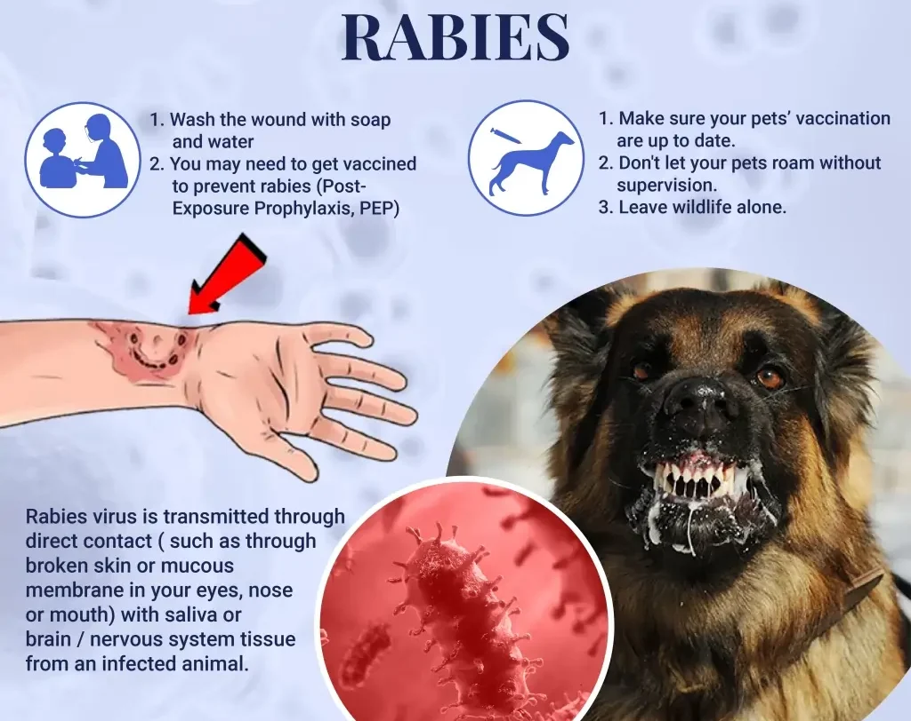

Expanded Nursing Uganda Explanation
Rabies should be reviewed through safe maternal and newborn assessment, early recognition of danger signs, respectful communication and timely referral. Connect the definition to vital signs, bleeding, fetal or newborn wellbeing, patient education and local protocol requirements.
Contents, 13 sections (tap to expand)
01 RABIES
Rabies , also known as hydrophobia , is a fatal viral infection of the central nervous system (CNS) characterized by inflammation and acute encephalitis. It’s caused by contact with the saliva of an infected animal.
02 Causes :
Rabies is caused by the rabies virus , a single-stranded RNA virus with a bullet-shaped morphology (130-300 nm). It belongs to the Lyssavirus genus of the Rhabdoviridae family and possesses an external envelope with short projections.
03 Source/Reservoir:
The primary reservoirs are infected wild animals, particularly those in the Canidae (dogs, foxes, etc.) and Felidae (cats, leopards, lions, etc.) families. Domestic dogs also serve as significant reservoirs, especially in areas with limited rabies control programs. Humans are accidental hosts.
04 Transmission :
Transmission primarily occurs through the saliva of a rabid animal, typically via a bite. Other less common routes include:
- Direct inoculation : A bite from a rabid animal directly introduces the virus into tissues.
- Mucosal contact: Saliva contact with mucous membranes (eyes, nose, mouth), particularly on broken skin.
- Aerosolization (rare): Inhalation of aerosolized saliva, primarily in bat caves or during close contact with infected animals.
05 Routes of Transmission:
The routes highlight the direct entry of the virus into the body:
- Neural route : The virus travels along peripheral nerves to the central nervous system (CNS). This is the primary route and explains the neurotropic nature of rabies.
- Hematogenous route (less common) : The virus can enter the bloodstream and spread throughout the body, though neural spread is the predominant mechanism.
Incubation Period:
The incubation period varies (2 weeks to 1 year, averaging 2-342 days), depending on:
- Bite site : Bites closer to the CNS (head, neck) have shorter incubation periods.
- Tissue penetration : Deeper wounds allow for faster viral dissemination.
- Viral load: Higher viral loads result in shorter incubation periods.
- Site of the bite : Bites on the head and neck tend to have shorter incubation periods than bites on the extremities due to proximity to the brain.
06 Pathology :
Following inoculation, the virus initially replicates at the bite site for approximately 96 hours . It then spreads via peripheral nerves to the spinal cord and brain , primarily replicating in the gray matter . The virus subsequently disseminates through autonomic nerves to various organs ( salivary glands , adrenal medulla , kidneys , lungs , liver , skeletal muscles , and skin ). At this stage, the patient’s saliva and secretions become infectious .
07 Clinical Presentations:
Rabies progresses through distinct stages:
Prodromal Stage(pre-encephalitic) : This initial phase is characterized by nonspecific symptoms:
- Pain at the bite site
- Headache
- Fever
- Malaise
- Weakness
- Anorexia
- Vomiting
- Sore throat
- Non-productive cough
Encephalitic Phase
Furious (Excitory) Stage : Neurological symptoms become prominent:
- Excessive motor activity, agitation, excitation
- Confusion, anxiety, hallucinations
- Muscle spasms
- Aggression
- Seizures
- Hypersensitivity to light, noise, touch, temperature
- Dilated pupils, lacrimation (excessive tearing), drooling, sweating
- Hydrophobia (fear of water)
- Aerophobia (fear of drafts)
Paralytic Stage: Progressive paralysis sets in:
- Pharyngeal spasms (difficulty swallowing), dysphagia, odynophagia
- Weakness spreading from the bite site, leading to constipation, urinary retention, respiratory failure
- Coma
- Death
Survival beyond a week after the onset of encephalitic symptoms is uncommon.
08 Management:
Medical management of developed rabies is largely supportive and focuses on alleviating symptoms and maintaining vital organ function. Unfortunately, there is no specific treatment that cures rabies once clinical symptoms are evident.
Aims :
- Prevent the progression of rabies to the encephalitic stage.
- Provide supportive care to maintain vital functions.
- Prevent further transmission of rabies if the patient is rabid.
First Aid Management:
Immediate wound care is crucial to minimize viral load:
- Thoroughly wash the wound with soap and water for at least 15 minutes. Scrub the wound gently.
- Rinse thoroughly with copious amounts of clean water.
- Leave the wound open (do not suture).
Hospital Management:
- Admission : Isolate the patient in a barrier room to prevent transmission.
- Treatment :
- Antibiotics : Systemic antibiotics (e.g., penicillin, metronidazole, doxycycline) to prevent secondary wound infections. Dosage adjustments are necessary for children and pregnant individuals (metronidazole and doxycycline are contraindicated in pregnancy).
- Passive Immunization : Administer rabies immunoglobulin (RIG) to neutralize the virus. Infiltrate RIG around and into the wound and give any remaining dose intramuscularly at a site distant from the rabies vaccine injection. If RIG cannot be given immediately, it may be administered within 7 days.
- Active Immunization : Administer rabies vaccine to stimulate an immune response. Vaccination schedules vary depending on pre- or post-exposure status and risk factors.
- Pre-exposure prophylaxis : For high-risk individuals (lab workers, wildlife personnel, etc.), a pre-exposure vaccination schedule (0, 7, 21 days) provides long-term protection. Boosters are needed periodically.
- Post-exposure prophylaxis : For those already bitten, a post-exposure regimen (2:1:1 schedule – 2 doses on day 0, 1 dose on day 7, 1 dose on day 21) is followed. This should be started as soon as possible after exposure.
- Sedation : Sedatives (e.g., chlorpromazine, diazepam) to manage agitation, spasms, and convulsions.
- Airway Management : Provide artificial ventilation and oxygen if respiratory failure occurs. Maintain a patent airway through suctioning or other appropriate measures.
- Protection : Healthcare personnel should wear appropriate personal protective equipment (PPE), including gloves, gowns, masks,
Supportive Care:
- Observation : Close monitoring of vital signs (heart rate, respiratory rate, blood pressure, temperature, oxygen saturation) is essential to detect early signs of respiratory or cardiac failure. Frequent monitoring (every 2-4 hours) and accurate charting are crucial.
- Rest and Sleep : Provide a quiet, dimly lit environment to minimize stimulation. Rabies patients are hypersensitive to light, noise, touch, and temperature changes.
- Nutrition : Nutritional support is critical. If the patient is sedated, feeding may be done via nasogastric tube (NGT) or intravenously (IV). If the patient is alert and able to swallow, oral feeding can be attempted. Close monitoring for aspiration is necessary.
- Fluid Balance : Monitor fluid intake and output closely. Patients may experience dehydration due to excessive sweating or difficulty swallowing. Intravenous fluids may be necessary.
- Hygiene : Maintain meticulous hygiene practices. Regular skin care, oral hygiene, and bladder care are essential.
Specific Treatment Considerations:
- Cardiac Arrhythmias : Monitor for cardiac arrhythmias and treat as needed with appropriate medications (e.g., antiarrhythmics).
- Respiratory Failure : If respiratory failure occurs, provide mechanical ventilation until spontaneous breathing resumes. The use of an ambu bag for artificial ventilation may be necessary if there’s paralysis of the respiratory muscles.
- Seizures : Manage seizures with anticonvulsant medications (e.g., diazepam, phenytoin).
- Pneumonia : Monitor for pneumonia and treat with appropriate antibiotics as needed.
- Brain Edema and Increased Intracranial Pressure : Monitor for signs of increased intracranial pressure (e.g., headache, vomiting, altered mental status) and consider measures to reduce intracranial pressure (e.g., corticosteroids, osmotic diuretics).
- Hyper- or Hypopyrexia : Treat fever or hypothermia with appropriate methods (e.g., antipyretics, cooling blankets).
- Diabetes Insipidus: Monitor for signs of diabetes insipidus (e.g., polyuria, polydipsia) and treat with desmopressin.
- Paralysis : Provide supportive care to manage paralysis. Range-of-motion exercises and physical therapy may be necessary once the acute phase has passed.
- Hematemesis : Manage hematemesis (vomiting blood) with appropriate measures (e.g., intravenous fluids, blood transfusion).
09 Rabies Post-Exposure Prophylaxis (PEP) Management
Rabies PEP aims to prevent rabies development after contact with potentially rabid animal saliva through bites, scratches, or licks on broken skin or mucous membranes (ICD-10 Codes: Z20.3, Z23). Treatment should follow guidelines such as those provided by the Veterinary Public Health Unit.
Dealing with the Animal:
The management of the animal is crucial in determining the appropriate PEP for the exposed individual.
A. Identifiable and Catchable Animal:
1. Domestic Animal: Determine rabies vaccination status. If unvaccinated or status unknown, quarantine the animal for 10 days (dogs, cats, or endangered species only). Humane euthanasia and head submission to the veterinary department for rabies testing is necessary if quarantine is not feasible.
- If no rabies signs within 10 days, release the animal and discontinue PEP for the human if already started.
- If rabies signs develop, euthanize, submit the head for testing, and proceed with full PEP for the human.
2. Wild Animal : Humane euthanasia and head submission to the veterinary department for rabies testing are necessary.
- If rabies is confirmed, initiate full PEP for the human.
- If the test is negative, rabies PEP is not necessary but local wound care is advised
B. Unidentifiable Animal : Assume the animal was rabid and the patient is at risk; initiate full PEP.
Dealing with the Patient:
The cornerstone of rabies PEP is a combination of local wound treatment, passive immunization with rabies immunoglobulin (RIG), and active immunization with rabies vaccine (RV). Regardless of the time elapsed since exposure (even months later), treatment should be initiated as if exposure were recent.
A. Local Wound Treatment : Prompt and thorough local treatment significantly reduces infection risk. This includes:
- Thorough cleansing : Wash the wound with soap and water for at least 15 minutes, followed by copious rinsing with clean water.
- Mucous membrane contact: Thoroughly rinse with water or normal saline.
- Deep wounds: Administer tetanus toxoid (TT) to prevent tetanus.
- Wound closure: DO NOT suture the wound.
- Late presentation : Local cleansing is indicated even if the patient presents late for treatment.
B. Immunization : The need for RIG and RV depends on the exposure type and animal status: (RV and RIG are both very expensive and should only be used when there is an absolute indication)
- Animal Condition at Time of Exposure Nature of Exposure 10 Days Later Recommended Action
- Healthy Saliva contact with skin, no lesion Healthy Do not vaccinate
- Rabid Saliva contact with skin, no lesion N/A Vaccinate
- Suspect/Unknown Saliva contact with skin, no lesion Healthy Do not vaccinate
- Suspect/Unknown Saliva contact with skin, no lesion Rabid Vaccinate
- Suspect/Unknown Saliva contact with skin, no lesion Unknown Vaccinate
- Healthy Saliva contact with skin lesions, minor bites Healthy Do not vaccinate
- Rabid Saliva contact with skin lesions, minor bites N/A Vaccinate
- Suspect/Unknown Saliva contact with skin lesions, minor bites Healthy Vaccinate; stop if animal healthy after 10 days
- Suspect/Unknown Saliva contact with skin lesions, minor bites Rabid Vaccinate
- Suspect/Unknown Saliva contact with skin lesions, minor bites Unknown Vaccinate
- Rabid or Suspect Saliva contact with mucous membranes, serious bites (face, head, fingers, or multiple bites) N/A Vaccinate and give RIG
- Rabid or Suspect Saliva contact with mucous membranes, serious bites (face, head, fingers, or multiple bites) N/A Vaccinate; stop if animal healthy after 10 days
Intramuscular Regimen
- DAY Vaccine Dose No. of Doses Comments
- 0 0.5 ml 2 (one in each deltoid) Into the deltoid muscle. NEVER IN THE GLUTEAL MUSCLE (buttocks).
- 7 0.5 ml 1 Children with less muscle mass: Anterolateral aspect of the thigh.
- 21 0.5 ml 1 Note: Day 14 is skipped. The 2:1:1 regimen uses 4 doses in 3 weeks. It has fewer patient appointments and it is easy to comply with. If the patient is on anti-malarial prophylaxis with Chloroquine, it should be withheld and an alternative malaria prophylaxis should be started if needed.
2-site Intradermal (ID) Regimen
- DAY Vaccine Dose No. of Doses Comments
- 0 0.1 ml 2 (one in each deltoid) It is cheaper since it uses less drug.
- 3 0.1 ml 2 (one in each deltoid) It requires special staff training in ID technique using 1 ml syringes with shorter needles.
- 7 0.1 ml 2 (one in each deltoid) Note: Days 14 and 21 are skipped.
- 28 0.1 ml 2 (one in each deltoid)
Rabies Immunoglobulin
- DAY Vaccine Dose No. of Doses Comments
- 0 20 IU/kg Infiltrate in the area around and in the wound at the same depth as the wound The Immunoglobulin should be administered as far as possible from the vaccine to avoid antibody-antigen reaction.
Prognosis :
The prognosis for rabies is poor once clinical symptoms appear. Untreated rabies is virtually always fatal. Even with treatment, mortality remains significant. Early diagnosis and treatment are crucial to improving the chances of survival.
Prevention :
- Animal Vaccination: Routine vaccination of pets (dogs, cats, etc.) is vital in preventing rabies transmission.
- Public Health Education : Public health campaigns should educate people about rabies prevention, including avoiding contact with stray or wild animals and seeking immediate medical attention after a bite or exposure.
- Wildlife Management: Controlling wildlife populations and reducing human-wildlife interaction can help prevent rabies transmission.
- Education : Public education campaigns to inform people about rabies prevention and the importance of seeking medical attention after animal bites.
- Avoid contact: Avoid contact with stray or wild animals, especially those exhibiting unusual behavior.
- Safe handling of animals: Proper handling techniques when dealing with animals, including wearing protective gear if necessary.
10 Nursing Uganda Clinical Lens
Use Rabies as a practical nursing topic, not only a memorized definition. Study medicines through indication, safety checks, expected response, adverse effects and patient teaching.
- What to understand first: define rabies, identify the normal or expected pattern, then explain what changes when the patient is unwell.
- Why it matters in care: the nurse must recognize risk early, explain findings clearly, document accurately and know when to escalate.
- How to revise it: connect each point to assessment, nursing diagnosis or care problem, intervention, rationale and evaluation.
11 Assessment Guide
- Diagnosis or reason for the medicine, allergies, pregnancy status and previous reactions.
- Current medicines, herbal products, renal or liver risk and baseline observations.
- Dose, route, timing, dilution, expiry date and documentation requirements.
12 Nursing Priorities, Rationales and Outcomes
- Apply the rights of medication administration and facility policy.
- Monitor therapeutic response and class-specific adverse effects.
- Educate the patient on purpose, timing, missed doses, warning symptoms and adherence.
The rationale for these priorities is patient safety: nursing actions should prevent deterioration, reduce discomfort, support recovery and create clear evidence for the next caregiver.
- Expected outcome: The medicine produces the intended effect without preventable harm, and administration is accurately documented.
13 Patient Teaching and Revision Check
- Explain rabies in simple language the patient or caregiver can repeat back.
- Teach warning signs, medicine or follow-up instructions, hygiene or lifestyle points where relevant.
- For exams, prepare a short answer using: definition, causes or risk factors, signs, assessment, management, complications and prevention.
- For ward practice, document baseline findings, actions taken, patient response and the plan for review.
Illustrations and Diagrams (1)

Related Video Lectures
Watch nursing lecture videos on YouTube for this topic. Opens in a new tab.
Watch on YouTubeExternal link: YouTube may use its own cookies and terms. Nursing Uganda is not affiliated with YouTube.